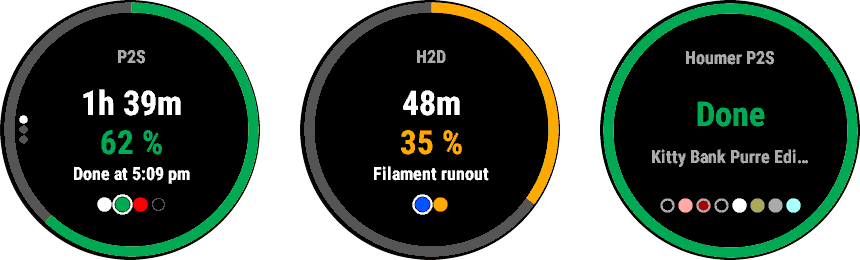

Your print on your Garmin watch: a glance with the time left, and a round screen just like the circle widget.

How it works
The app on your phone sends the print status to the watch through Garmin Connect, whenever something changes. The watch needs no Bambu sign-in of its own.
What it shows
Printer, time left, percent, finish time and the loaded filaments. Paused and failed prints stand out by colour. With several printers, Up and Down switch between them.
Always current
Between updates the watch counts the time down by itself. If it hasn't heard from your phone for 15 minutes, the numbers turn grey.
Alpha test: use at your own risk. The watch app and the phone app below are early test versions for testing purposes only. They may show wrong or outdated numbers, use more battery or stop working, and they can change at any time. It's not in the Connect IQ Store yet, and it's not made or endorsed by Garmin or Bambu Lab.
How to try it
The watch app gets its data from the phone app, so you need the test version of the phone app with Garmin support: BambuStatusWidget-1.0.11-garmin-alpha.apk (Android 12 or newer, 0.6 MB). If you have the app from Google Play, uninstall it first: Android won't install this file over it, and your widgets and settings are reset. Open the downloaded file on your phone and allow installing from this source when asked. Garmin Connect must be on the same phone, paired with your watch.
Download the watch app for your model on a computer:
Download119 models, about 15 KB each. Your model isn't listed? Write to me.
Connect the watch to the computer with its charging cable and copy the file into the GARMIN\Apps folder on the watch. On a Mac you need a tool like OpenMTP to see the watch. Then unplug it.
On the watch, open the glances, scroll to the end, choose Edit, then Add and Bambu Status.
Open Bambu Status Widget on your phone once. Within a minute your printer appears on the watch. Press Start on the glance for the full screen.
To go back, delete the watch app from GARMIN\Apps, uninstall the test version and install the app from Google Play again. The test version doesn't update itself: check this page for new versions. So far the watch app has run on a real Forerunner 955; the other models are checked in Garmin's simulator only, so tell me how it looks on yours.